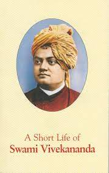
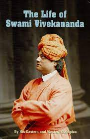
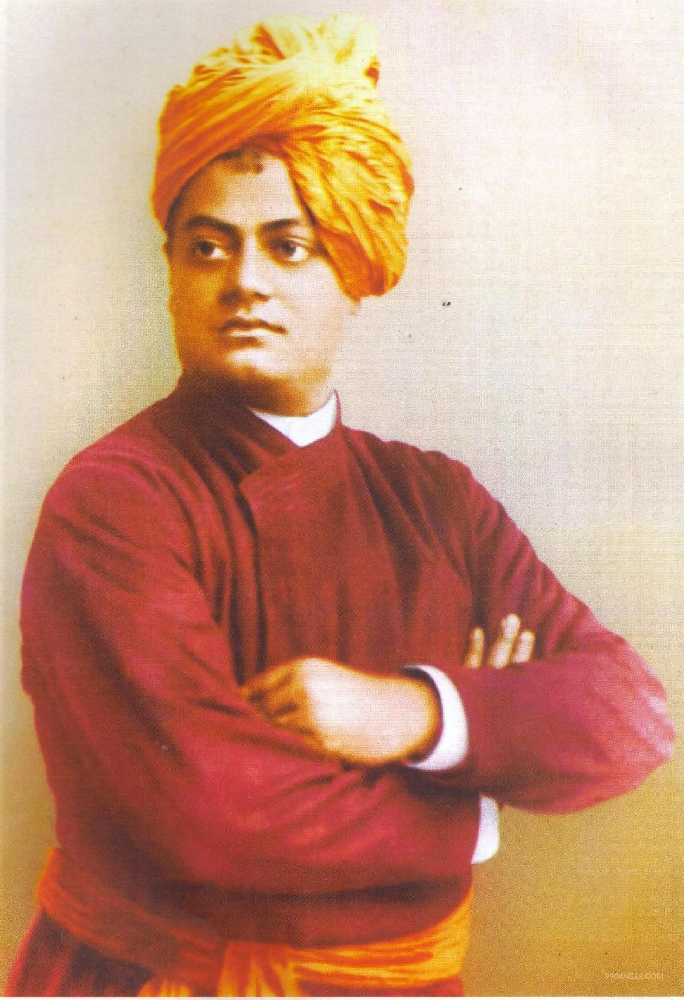
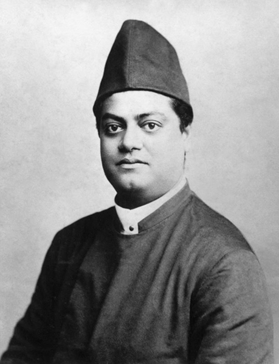

Biography of Swami Vivekananda
Name : Swami vivekananda
Born : 12 January 1863, Kolkata
Died : 4 July 1902, Belur Math, Howrah
Education : Scottish Church College (SCC), Vidyasagar College (1871–1877)
Presidency University, University of Calcutta
Edited works: Karma Yoga, The Yoga Sutras of Patanjali
Parents : Vishwanath Datta, Bhuvaneswari Devi
Nicknames : Naren, Narendra
Born as Narendranath Dutta on 12 January 1863, Swami Vivekananda is considered
one of the chief saints of India.
The prime disciple of 19th century Indian mystic Ramakrishna
Paramhansa, he reintroduced the Indian philosophies of Vedanta and Yoga to the
Western world.

Early Life
Swami Vivekananda was popularly known as Naren was born at his
ancestral home at 3 Gourmohan Mukherjee Street in British Capital Calcutta.
Son of Vishwanath Dutta, who was an attorney at the Calcutta
High Court and a devout housewife Bhubaneswari Devi, Naren's upbringing was
influenced by his father's liberal thinking and his mother's spiritual and
religious temperament.
Education
Swami Vivekananda was intelligent since childhood. He was
the only student to have received first division marks in Presidency College
entrance examination. An avid reader of various subjects, including religion,
history, social science, art and literature, he also had profound interest in
Puranas, Vedas and Upanishads.

Travel and Philosophy
Swami Vivekananda was intelligent since childhood. He was
the only student to have received first division marks in Presidency College
entrance examination. An avid reader of various subjects, including religion,
history, social science, art and literature, he also had profound interest in
Puranas, Vedas and Upanishads.
With his introductory speech, satrting "Sisters and brothers of
America", Swami Vivekananda earned a 2-minute standing ovation from the crowd
of seven thousand.
Death

Swami Vivekananda attained Mahasamadhi on July 4, 1902. On this day,
he woke up early, went to Belur Math and meditated there for three hours.
After taking classes and discussing a planned Vedic college in Ramakrishna Math,
he went to his room at 7 pm and asked not be disturbed.
He died at 9:10 pm while meditating. Medically, a rupture of a blood
vessel in his brain led to the death. His disciples believe that the rupture
was due to brahmarandhra (an opening in the crown of his head) being pierced
when he attained mahasamādhi.
Finally,He was cremated on a sandalwood pyre on the banks of Ganga
in Belur.
THE END..........